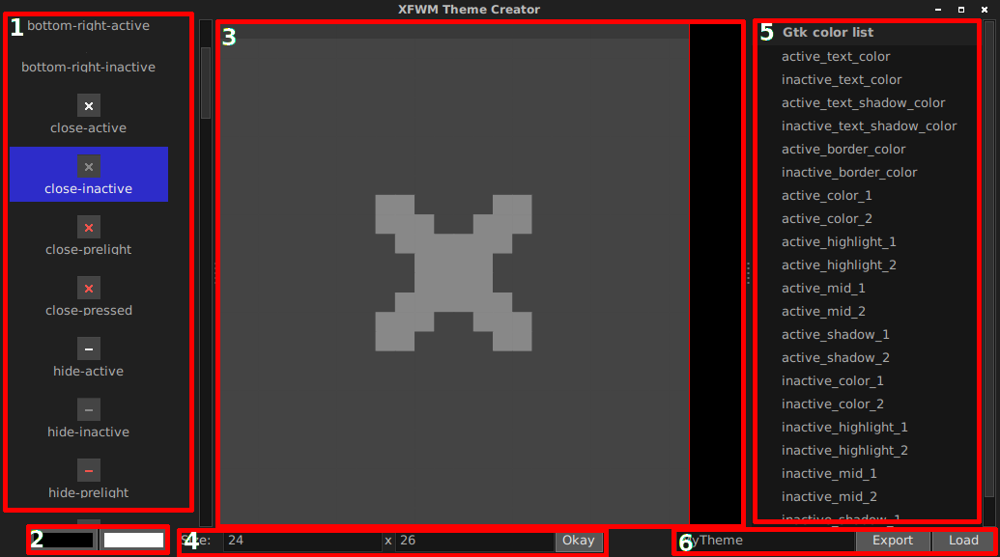

XFWM_theme_creator
A graphical interface to help with creating XFWM themes
Installing:
Make sure you have:
- Python3
- PyGTK
- Cairo
apt-get install python3
apt-get install python3-gi
apt-get install python3-cairo
Running:
Just run this from a terminal.
python3 theme_creator.py
How to use:

1
This is a list of the icons that makes up the theme. Click one of these to make it show up in the editor.
If you're creating a new theme all of these will be blank.
2
From left to right:
Background Color. This is the color that fills the background.
Foreground Color. This is the color that you paint with in the foreground.
3
The painting area. The item you click in the list from #1 will be modified.
The color you paint will be the foreground from #2. You will also paint with the variable you have selected in #5.
If you have painted with a variable a red box will appear around the pixel. You can hover over it to see what var was used.
4
The width and height of the area you're working with. You can change this then press "Okay" to modify the values.
This will destroy all your work on the current area.
5
A list of GTK variables you can use. They will change based on the current theme you have set.
When you paint with these you can see a red box around the pixel you painted. You can then hover over this box and see what variable was used.
6
From left to right:
Theme name: The name of folder to create when you press 'Export'
Export: Exports the current theme to a .tar.gz file. You can then copy this file to your .themes folder and extract it.
Load: Loads an already existing theme. This has to be the xfwm4 folder or a folder with xfwm4 in it.
Note:
I may add themerc file support sometime in the future. Depends on how much people use this / want it.
Currently some of the code isn't commented or is a little messy. I plan to clean it up.